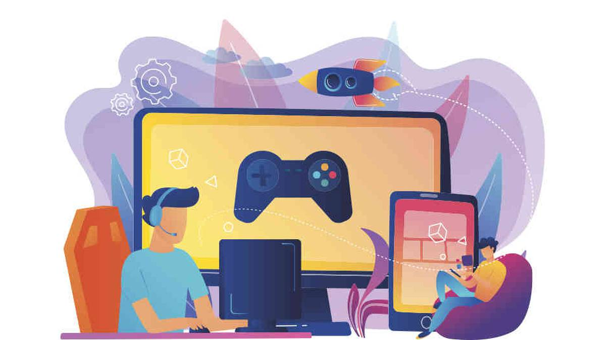
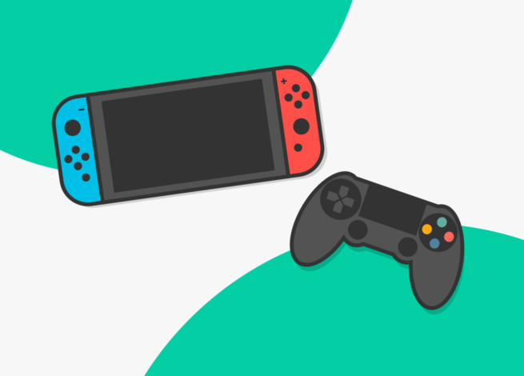

Desde muy pequeño me empezaron a gustar todo tipo de cosas, algunas de mis favoritas son los deportes, en
especifico el futbol, la musica y los videojuegos, estos ultimos despertaron en mi una gran
curiosidad, lo que yo queria saber es como era que estos funcionaban, tambien me interesaba como
se podia jugar con diferentes jugadores en linea. Era tanta mi curiosidad que mi
sueño era que al complir la mayoria de edad pududiera empesar mi negocio y fundar mi empresa de videojuegos.
Empece a investigar sobre como se hacian los videojuegos y mientras crecia iba descubriendo muchas cosas y mientras lo hacia
mi interes crecia, cuando ya sabia un poco mas sobre el tema empece a programar mis primeros videojuegos que para ser sincero eran
bastante malos y aun me faltaba mucho por aprender, cuando cumpli los 18 años me desanime por que aun no estaba listo para crear
mi empresa pero no me rendi y segui intentando hasta que a la edad de 25 años cree un juego bastante bueno y lo pude vender a otra
empresa. Con el dinero que consegui crei que seria suficiente para crear mi propia empresa, pero no era asi y segui trabajando un buen
tiempo hasta que lo pude lograr y cree mi propia emprea, yo estaba muy feliz y decidi ponerle el nombre de League Games.
En ese momento en el que consegui mi sueño recorde que cuando estaba triste vi un video de totivacion que me ayudo mucho a seguir adelante y si tu pasas por un mal momento te invito a ver este video espero y te sirva.